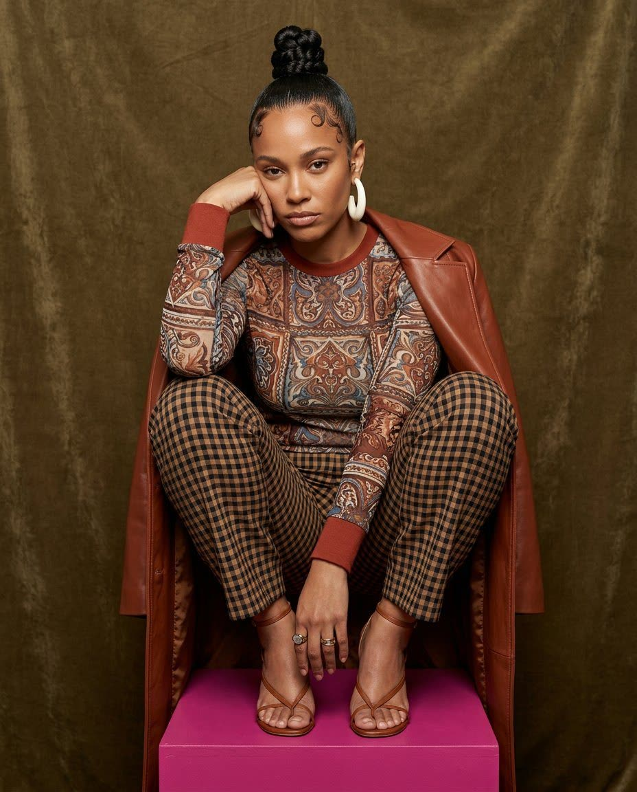

Dense intentional styling, seated pose
WRD-023WardrobeNano Banana 2by dreamy digital arts (@dreamydigiarts)2026-10-12

Vertical editorial built around layered, intentional styling and a compact seated pose.
Prompt
Create a vertical fashion editorial built around dense, intentional styling and a compact seated pose. Seat the adult woman on a vivid magenta pedestal with both knees drawn high toward her chest, feet close together, one elbow resting on a raised knee and her head leaning into that hand. Let the opposite hand fall loosely between the knees. Keep the posture cramped, relaxed and slightly bored rather than conventionally glamorous. Dress her in high-waisted brown-and-black checkerboard trousers with a fitted long-sleeve printed mesh top covered in intricate earthy ornamental graphics, using rust, muted blue, tobacco, cream and deep brown with solid brick-red cuffs and collar to contain the pattern. Drape a structured rust-brown leather coat loosely over the shoulders so it frames the patterned layers without hiding them. Finish with delicate warm-brown strappy heels. Style the hair extremely sleek and pulled tight into a high braided top knot, with the braid forming a compact sculptural bun. Lay several small baby curls and shaped edges deliberately along the forehead and temples so the hairline becomes part of the styling. Add oversized curved ivory earrings as the single bright graphic accent beside the face, plus a few mismatched vintage rings on the lowered hand. Keep other jewelry minimal. Use a mottled olive-brown velvet backdrop so the clothing remains dominant, while the hot-pink pedestal acts as one deliberate color interruption against the otherwise earthy palette. Light the face and clothing with broad soft frontal light, preserving textile texture, leather weight, patterned detail and natural skin. The image should work through controlled pattern clash, severe hair against busy clothing, one clean ivory accessory near the face, delicate footwear, the disruptive magenta block and the compressed indifferent pose. No text, logos or watermarks.
Tags: layering, editorial pose